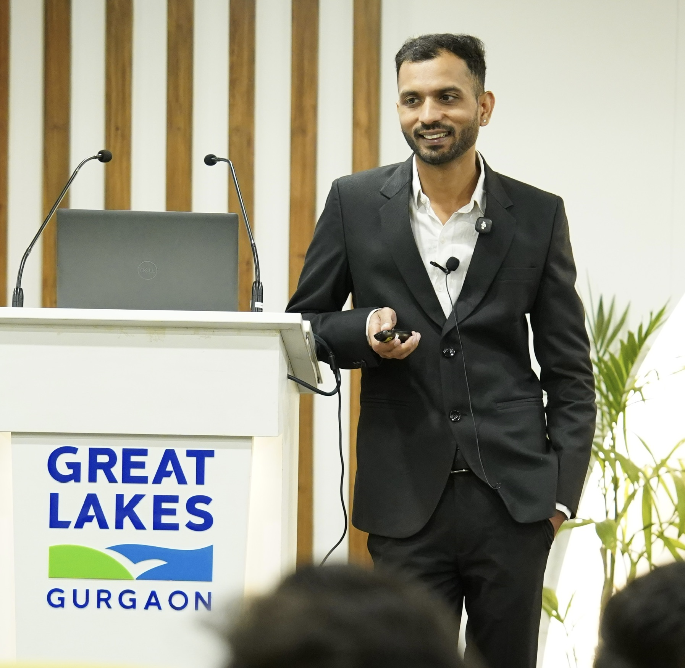
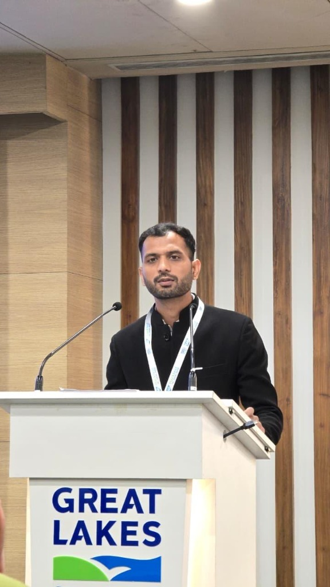

Spring 2026
The AI calibration gap
Firms confuse technical accuracy with consumer comfort. When AI exceeds what people expect, it can feel alienating rather than impressive.
I am Chairperson of Research and Assistant Professor of Marketing at the Great Lakes Institute of Management, Gurgaon. My work spans 15 ABDC A* and A journal articles on augmented reality marketing, inclusive marketing and how people respond to AI. I hold a PhD from MDI Gurgaon, where I studied on a UGC Junior Research Fellowship after placing All India Rank 3.

Included in the Stanford–Elsevier list of the world's top 2% scientists. Chairperson of Research, Great Lakes Institute of Management, Gurgaon.
New book
Ten Ways to Be Purposefully Alive, and How to Choose Yours
The one exam nobody prepared you for. Sooner or later every life runs into the same question: what is it all for? This book sets out ten ways to be purposefully alive, and helps you choose the one you will live by.
It begins with “The last why”: the question left over after you have asked why about everything else. The ten ways are grouped into four parts: what we are made for, what we live for, what we owe, and how we face the end. It draws on science, philosophy, faith and lived experience without imposing a single answer.
Each chapter closes with a “Try this” experiment, so you test an idea in your own life instead of only reading about it. A workbook at the end brings the experiments together into your own answer.
“Some books help us get more done. This one asks what is worth doing.”
“Rigorous, honest and deeply human: read it before your next big decision.”
“In this thought-provoking and eye-opening book, Dr Harish Kumar offers an entertaining, deep and engaging take on a simple yet powerful question: what is life for? At its core lie different ways to think about, and enact, a purposeful existence, masterfully explicated by Harish. A must-read!”
“A thoughtful and engaging exploration of one of life’s most fundamental questions, bringing together science, philosophy, faith and lived experience without imposing a single answer. Its real strength lies in encouraging readers not merely to search for purpose, but to consciously examine, test and choose the purpose by which they live.”
“In a world where we are increasingly training ourselves to answer what and how, this is a refreshing take on why. Told through the lens of analytical expertise, the book is a must-read for all, at every stage of life. Harish connects the dots beautifully and lucidly, without compromising on rigour.”
“Purpose does not evolve out of searching outside; it is discovered by aligning the instruments within. That is what Harish Kumar’s book helps you to accomplish. Wonderful, entertaining and meaningful on every page.”
“What Is Life For? is about understanding ten dimensions of life for blissful living. Kudos, Harish, for penning a beautiful book!”
“The best part of the book is how relatable it is to situations we encounter in our everyday lives. Thoughtfully written, it feels heartfelt and genuine, and the reader connects with it on a personal level.”
“In this age of high uncertainty, Dr Harish’s book comes as a solace that can be a foundation for the next generation.”
Each strand moves from a question about everyday behaviour to evidence a manager or policymaker can use.
Which features of AR, such as virtual try-on, create real value for shoppers, and when do privacy worries undo it.
Why AI that exceeds expectations, or writes too flawlessly, can lower trust instead of raising it.
How inclusive campaigns and accessible services reduce stigma for LGBTQIA+ consumers, consumers with disabilities and low-income users.
One sentence per paper, in plain English. Each links to a fuller summary.
Augmented reality sells because its features (contextualization, interactivity, portability) deliver concrete benefits such as inspiration, better decisions and lower risk, which in turn serve people's deeper values.
Based on 36 laddering interviews and two surveys (N = 411). Kumar et al., Information & Management, 2024. Summary →
Across 19 studies, interactivity and augmentation are the AR features that create both practical and fun value; interactivity drives purchase intention only through that value.
Meta-analysis. Kumar, Gupta & Chauhan, Marketing Intelligence & Planning, 2023. Summary →
People use AR apps mainly for convenience and information, not fun or social status; hedonic value mattered only for women.
Schultz & Kumar, Journal of Retailing and Consumer Services, 2024. Summary →
AR empowers shoppers, which builds brand attachment and engagement and turns users into brand advocates.
Survey of 502 AR users. Kumar et al., Journal of Consumer Behaviour, 2024. Summary →
Privacy concerns weaken how much consumers learn from AR virtual try-on, lowering their confidence in the product and their intention to buy.
Two branded AR try-on apps. Lavoye & Kumar, Journal of Retailing and Consumer Services, 2025. Summary →
Inclusive marketing is a human-centred, value-driven and integrated marketing approach; a review of 71 studies maps the field into six streams.
Tuli, Srivastava & Kumar, Journal of Business Research, 2025. Summary →
Journal articles, teaching cases and book chapters. Open any entry for the key finding, method and citation.
Showing all 21 entries
Arghashi, V., Kumar, H., Mathew, J., Venkatesh, U., & Altinbasak Farina, I.
Journal of Business & Industrial Marketing
Key finding: A three-part framework (innovation and collaboration ecosystems, advanced marketing initiatives, and augmented service and support) shows how immersive metaverse environments improve B2B service, engagement, personalisation, collaboration and decision-making.
Arghashi, V., Kumar, H., Mathew, J., Venkatesh, U., & Altinbasak Farina, I. (2026). B2B marketing in metaverse: Toward a theoretical framework. Journal of Business & Industrial Marketing. https://doi.org/10.1108/JBIM-09-2024-0679
@article{arghashi2026b2b,
title={B2B marketing in metaverse: Toward a theoretical framework},
author={Arghashi, Vahideh and Kumar, Harish and Mathew, Jones and Venkatesh, Umashankar and Altinbasak Farina, Ipek},
journal={Journal of Business \& Industrial Marketing},
year={2026},
doi={10.1108/JBIM-09-2024-0679}
}
Tuli, N., Kumar, H., Upadhyay, S., & Ciszek, E.
International Journal of Advertising
Key finding: LGBTQ-inclusive campaigns can reduce identity stigma for Indian LGBTQIA+ consumers by giving them visibility, legitimising their status as consumers, sensitising other consumers, proving the value of inclusion and creating a safe space.
Tuli, N., Kumar, H., Upadhyay, S., & Ciszek, E. (2025). Distance between ‘them’ and ‘us’: Identity stigmatization in the age of consumer inclusion. International Journal of Advertising. https://doi.org/10.1080/02650487.2025.2592469
@article{tuli2025distance,
title={Distance between 'them' and 'us': Identity stigmatization in the age of consumer inclusion},
author={Tuli, Nikhita and Kumar, Harish and Upadhyay, Saurabh and Ciszek, Erica},
journal={International Journal of Advertising},
year={2025},
doi={10.1080/02650487.2025.2592469}
}
Tuli, N., Srivastava, V., & Kumar, H.
Journal of Business Research, 191, 115274
Key finding: Reviewing 71 articles with the TCCM framework, the study sorts inclusive marketing research into six streams and refines its definition as a human-centred, value-driven and integrated marketing approach.
Tuli, N., Srivastava, V., & Kumar, H. (2025). Inclusive marketing: A review and research agenda. Journal of Business Research, 191, 115274. https://doi.org/10.1016/j.jbusres.2025.115274
@article{tuli2025inclusive,
title={Inclusive marketing: A review and research agenda},
author={Tuli, Nikhita and Srivastava, Vibhava and Kumar, Harish},
journal={Journal of Business Research},
volume={191},
pages={115274},
year={2025},
doi={10.1016/j.jbusres.2025.115274}
}
Lavoye, V., & Kumar, H.
Journal of Retailing and Consumer Services, 87, 104425
Key finding: Spatial presence and cognitive involvement both improve product attitudes, but only cognitive involvement raises attitude certainty, and privacy concerns weaken that effect on certainty and purchase intention.
Lavoye, V., & Kumar, H. (2025). Understanding how augmented reality's immersive experience and privacy concerns impact consumer responses: A cognitive perspective. Journal of Retailing and Consumer Services, 87, 104425. https://doi.org/10.1016/j.jretconser.2025.104425
@article{lavoye2025understanding,
title={Understanding how augmented reality's immersive experience and privacy concerns impact consumer responses: A cognitive perspective},
author={Lavoye, Virginie and Kumar, Harish},
journal={Journal of Retailing and Consumer Services},
volume={87},
pages={104425},
year={2025},
doi={10.1016/j.jretconser.2025.104425}
}
Kumar, H., & Agarwal, M. N.
Australian Journal of Management, 50(1), 152–172
Key finding: AR filters intensify social comparison and expose the gap between users' actual and ideal selves, yet inspire some to narrow it; these mixed feelings shape body satisfaction, self-confidence and whether people keep using filters.
Kumar, H., & Agarwal, M. N. (2025). Filtering the reality: Exploring the dark and bright sides of augmented reality–based filters on social media. Australian Journal of Management, 50(1), 152–172. https://doi.org/10.1177/03128962231199356
@article{kumar2025filtering,
title={Filtering the reality: Exploring the dark and bright sides of augmented reality--based filters on social media},
author={Kumar, Harish and Agarwal, Madhushree Nanda},
journal={Australian Journal of Management},
volume={50},
number={1},
pages={152--172},
year={2025},
doi={10.1177/03128962231199356}
}
Srivastava, R., Gupta, P., Kumar, H., & Tuli, N.
Australian Journal of Management, 50(1), 220–245
Key finding: Reviewing 139 articles, the study maps the theories, methods, antecedents, drivers and outcomes of digital customer engagement and builds a framework to guide future research.
Srivastava, R., Gupta, P., Kumar, H., & Tuli, N. (2025). Digital customer engagement: A systematic literature review and research agenda. Australian Journal of Management, 50(1), 220–245. https://doi.org/10.1177/03128962231177096
@article{srivastava2025digital,
title={Digital customer engagement: A systematic literature review and research agenda},
author={Srivastava, Ritu and Gupta, Parul and Kumar, Harish and Tuli, Nikhita},
journal={Australian Journal of Management},
volume={50},
number={1},
pages={220--245},
year={2025},
doi={10.1177/03128962231177096}
}
Kumar, H., Rauschnabel, P. A., Agarwal, M. N., Singh, R. K., & Srivastava, R.
Information & Management, 61(2), 103910
Key finding: From 36 laddering interviews and two surveys (N = 411), AR features are linked to consumer benefits and values, organised into the SEAD framework (benefits) and the SALES framework (status, achievement, lifestyle, economy, safety).
Kumar, H., Rauschnabel, P. A., Agarwal, M. N., Singh, R. K., & Srivastava, R. (2024). Towards a theoretical framework for augmented reality marketing: A means-end chain perspective on retailing. Information & Management, 61(2), 103910. https://doi.org/10.1016/j.im.2023.103910
@article{kumar2024towards,
title={Towards a theoretical framework for augmented reality marketing: A means-end chain perspective on retailing},
author={Kumar, Harish and Rauschnabel, Philipp A. and Agarwal, Madhushree Nanda and Singh, Rajesh Kumar and Srivastava, Ritu},
journal={Information \& Management},
volume={61},
number={2},
pages={103910},
year={2024},
doi={10.1016/j.im.2023.103910}
}
Schultz, C. D., & Kumar, H.
Journal of Retailing and Consumer Services, 78, 103701
Key finding: Convenience and informational value drive how useful people find AR apps; hedonic value matters only for female consumers, and monetary and social value show no effect.
Schultz, C. D., & Kumar, H. (2024). ARvolution: Decoding consumer motivation and value dimensions in augmented reality. Journal of Retailing and Consumer Services, 78, 103701. https://doi.org/10.1016/j.jretconser.2023.103701
@article{schultz2024arvolution,
title={ARvolution: Decoding consumer motivation and value dimensions in augmented reality},
author={Schultz, Carsten D. and Kumar, Harish},
journal={Journal of Retailing and Consumer Services},
volume={78},
pages={103701},
year={2024},
doi={10.1016/j.jretconser.2023.103701}
}
Caboni, F., Basile, V., Kumar, H., & Agarwal, D.
Journal of Retailing and Consumer Services, 80, 103924
Contribution: A framework of the ways consumers use AR across in-store and remote retail touchpoints.
Caboni, F., Basile, V., Kumar, H., & Agarwal, D. (2024). A holistic framework for consumer usage modes of augmented reality marketing in retailing. Journal of Retailing and Consumer Services, 80, 103924. https://doi.org/10.1016/j.jretconser.2024.103924
@article{caboni2024holistic,
title={A holistic framework for consumer usage modes of augmented reality marketing in retailing},
author={Caboni, Federica and Basile, Vincenzo and Kumar, Harish and Agarwal, Divya},
journal={Journal of Retailing and Consumer Services},
volume={80},
pages={103924},
year={2024},
doi={10.1016/j.jretconser.2024.103924}
}
Kumar, H., Tuli, N., Singh, R. K., Arya, V., & Srivastava, R.
Journal of Consumer Behaviour
Key finding: In a survey of 502 AR users, AR empowered people while shopping, which built brand attachment and engagement and, in turn, brand advocacy.
Kumar, H., Tuli, N., Singh, R. K., Arya, V., & Srivastava, R. (2024). Exploring the role of augmented reality as a new brand advocate. Journal of Consumer Behaviour. https://doi.org/10.1002/cb.2227
@article{kumar2024exploring,
title={Exploring the role of augmented reality as a new brand advocate},
author={Kumar, Harish and Tuli, Nikhita and Singh, Rajesh Kumar and Arya, Vikas and Srivastava, Ritu},
journal={Journal of Consumer Behaviour},
year={2024},
doi={10.1002/cb.2227}
}
Upadhyay, S., Tuli, N., & Kumar, H.
Australasian Marketing Journal, 32(3), 223–238
Key finding: Interviews with 29 LGBTQIA+ and non-LGBTQ consumers, followed by a quantitative phase, identify seven factors behind effective inclusive campaigns, including social acceptance of the community, community-specific symbols, authentic communication, top management's approach, inclusive hiring and brand history.
Upadhyay, S., Tuli, N., & Kumar, H. (2024). Crafting inclusive marketing campaigns: Insights and influential factors in the Indian context. Australasian Marketing Journal, 32(3), 223–238. https://doi.org/10.1177/14413582241247328
@article{upadhyay2024crafting,
title={Crafting inclusive marketing campaigns: Insights and influential factors in the Indian context},
author={Upadhyay, Saurabh and Tuli, Nikhita and Kumar, Harish},
journal={Australasian Marketing Journal},
volume={32},
number={3},
pages={223--238},
year={2024},
doi={10.1177/14413582241247328}
}
Tuli, N., Kumar, H., Srivastava, R., & Gupta, P.
Journal of International Consumer Marketing, 36(1), 1–20
Key finding: From 26 in-depth interviews, bottom-of-the-pyramid users engage with social media both positively and negatively: they treat it as a resource and judge its fit with their abilities and social relevance, while security fears and restrictions hold them back.
Tuli, N., Kumar, H., Srivastava, R., & Gupta, P. (2024). Demystifying the engagement process: A BoP perspective toward social media engagement. Journal of International Consumer Marketing, 36(1), 1–20.
@article{tuli2024demystifying,
title={Demystifying the engagement process: A BoP perspective toward social media engagement},
author={Tuli, Nikhita and Kumar, Harish and Srivastava, Ritu and Gupta, Parul},
journal={Journal of International Consumer Marketing},
volume={36},
number={1},
pages={1--20},
year={2024}
}
Arya, V., Auruskeviciene, V., Agarwal, S., Kokatnur, P., Kumar, H., & Verma, R.
Environmental Science and Pollution Research
Key finding: Interviews with 26 tourism experts from eight countries, analysed with interval type-2 fuzzy sets, identify the components most critical to advancing sustainable tourism.
Arya, V., Auruskeviciene, V., Agarwal, S., Kokatnur, P., Kumar, H., & Verma, R. (2024). Let us take a walk to the sustainable tourism practices: A qualitative study through the lens of tourism experts. Environmental Science and Pollution Research. https://doi.org/10.1007/s11356-023-31503-7
@article{arya2024sustainable,
title={Let us take a walk to the sustainable tourism practices: A qualitative study through the lens of tourism experts},
author={Arya, Vikas and Auruskeviciene, Vilte and Agarwal, Srishti and Kokatnur, Priyanka and Kumar, Harish and Verma, Rajeev},
journal={Environmental Science and Pollution Research},
year={2024},
doi={10.1007/s11356-023-31503-7}
}
Kumar, H., Gupta, P., & Chauhan, S.
Marketing Intelligence & Planning, 41(1), 110–123
Key finding: Across 19 quantitative studies, interactivity and augmentation create both hedonic and utilitarian value; interactivity has no direct effect on behavioural intention and works only through that value.
Kumar, H., Gupta, P., & Chauhan, S. (2023). Meta-analysis of augmented reality marketing. Marketing Intelligence & Planning, 41(1), 110–123. https://doi.org/10.1108/MIP-06-2022-0221
@article{kumar2023meta,
title={Meta-analysis of augmented reality marketing},
author={Kumar, Harish and Gupta, Parul and Chauhan, Sumedha},
journal={Marketing Intelligence \& Planning},
volume={41},
number={1},
pages={110--123},
year={2023},
doi={10.1108/MIP-06-2022-0221}
}
Tuli, N., Srivastava, R., & Kumar, H.
Journal of Services Marketing, 37(9), 1132–1150
Key finding: Reviewing 77 articles under the PRISMA protocol, the study organises research by service stage (planning, usage, post-usage) and proposes a framework that moves beyond regulation toward accessibility, value co-creation, inclusion and the role of stakeholders.
Tuli, N., Srivastava, R., & Kumar, H. (2023). Navigating services for consumers with disabilities: A comprehensive review and conceptual framework. Journal of Services Marketing, 37(9), 1132–1150. https://doi.org/10.1108/JSM-06-2023-0204
@article{tuli2023navigating,
title={Navigating services for consumers with disabilities: A comprehensive review and conceptual framework},
author={Tuli, Nikhita and Srivastava, Ritu and Kumar, Harish},
journal={Journal of Services Marketing},
volume={37},
number={9},
pages={1132--1150},
year={2023},
doi={10.1108/JSM-06-2023-0204}
}
Kumar, H., & Srivastava, R.
International Journal of Retail & Distribution Management, 50(10), 1281–1301
Key finding: For high body-involvement products, AR virtual try-on significantly increases online impulse behaviour by adding hedonic value and lowering perceived product risk; the study also tests flow and spatial presence as mediators.
Kumar, H., & Srivastava, R. (2022). Exploring the role of augmented reality in online impulse behaviour. International Journal of Retail & Distribution Management, 50(10), 1281–1301. https://doi.org/10.1108/IJRDM-11-2021-0535
@article{kumar2022exploring,
title={Exploring the role of augmented reality in online impulse behaviour},
author={Kumar, Harish and Srivastava, Ritu},
journal={International Journal of Retail \& Distribution Management},
volume={50},
number={10},
pages={1281--1301},
year={2022},
doi={10.1108/IJRDM-11-2021-0535}
}
Kumar, H.
International Journal of Retail & Distribution Management, 50(4), 537–559
Key finding: Reviewing 53 articles, the study builds a framework of consumer behaviour toward AR in online retail and sets five research priorities: AR's social side, its dark side, customer engagement, experiential value and AR marketing.
Kumar, H. (2022). Augmented reality in online retailing: A systematic review and research agenda. International Journal of Retail & Distribution Management, 50(4), 537–559. https://doi.org/10.1108/IJRDM-06-2021-0287
@article{kumar2022augmented,
title={Augmented reality in online retailing: A systematic review and research agenda},
author={Kumar, Harish},
journal={International Journal of Retail \& Distribution Management},
volume={50},
number={4},
pages={537--559},
year={2022},
doi={10.1108/IJRDM-06-2021-0287}
}
Kumar, H., & Tuli, N.
Asia Pacific Journal of Information Systems, 31(4), 582–605
Key finding: From 24 interviews, branded app engagement has three triggers: media characteristics (privacy and security, customization, convenience), brand aspects (brand image, product or service quality) and benefits sought.
Kumar, H., & Tuli, N. (2021). Decoding the branded app engagement process: A grounded theory approach. Asia Pacific Journal of Information Systems, 31(4), 582–605. https://doi.org/10.14329/apjis.2021.31.4.582
@article{kumar2021decoding,
title={Decoding the branded app engagement process: A grounded theory approach},
author={Kumar, Harish and Tuli, Nikhita},
journal={Asia Pacific Journal of Information Systems},
volume={31},
number={4},
pages={582--605},
year={2021},
doi={10.14329/apjis.2021.31.4.582}
}
Tuli, N., & Kumar, H.
Ivey Publishing teaching case
Target market selection and unit-economics trade-offs for an agritech supply-chain start-up.
Tuli, N., & Kumar, H. (2023). Fresherry: A market selection dilemma [Teaching case]. Ivey Publishing.
@misc{tuli2023fresherry,
title={Fresherry: A market selection dilemma},
author={Tuli, Nikhita and Kumar, Harish},
year={2023},
publisher={Ivey Publishing}
}
Kumar, H.
Ivey Publishing teaching case, distributed by Harvard Business Publishing (W25507)
Competitive disruption and omnichannel pricing in traditional pharmacy retail.
Kumar, H. (2021). Rock Pharmacy: Rocked? [Teaching case W25507]. Ivey Publishing.
@misc{kumar2021rock,
title={Rock Pharmacy: Rocked?},
author={Kumar, Harish},
year={2021},
publisher={Ivey Publishing},
note={Case W25507}
}
Kumar, H., Garg, R., Kumar, P., & Chhikara, R.
In Strategies and Tools for Managing Connected Consumers (pp. 279–291). IGI Global
Kumar, H., Garg, R., Kumar, P., & Chhikara, R. (2020). A qualitative insight into the personal factors impacting online impulse behavior. In Strategies and tools for managing connected consumers (pp. 279–291). IGI Global. https://doi.org/10.4018/978-1-5225-9697-4.ch016
@incollection{kumar2020qualitative,
title={A qualitative insight into the personal factors impacting online impulse behavior},
author={Kumar, Harish and Garg, R. and Kumar, P. and Chhikara, R.},
booktitle={Strategies and Tools for Managing Connected Consumers},
pages={279--291},
year={2020},
publisher={IGI Global},
doi={10.4018/978-1-5225-9697-4.ch016}
}
MBA courses at Great Lakes, built around experiments, cases and live fieldwork.
PGPM elective
How brands move from flat screens to physical-digital experiences: presence, virtual storefronts, mixed-reality analytics and the ethics of biometric data. Students audit real AR and VR retail apps.
PGPM core
The psychological and social forces behind judgment and choice, from heuristics to identity in digital communities. Taught through experiments and Harvard and Ivey cases.
PGPM core
Turning business problems into rigorous studies: causal inference, measurement, questionnaire design and multivariate modelling in SPSS, AMOS and SmartPLS.
Founded in 2023 at Great Lakes Gurgaon to study how extended reality and AI shape consumer behaviour.
Experiments on presence, sensory load and decision-making in immersive displays.
The base for the Spatial Computing in Marketing course and its hands-on projects.
Joint work with faculty at UniBw Munich, Indiana University and Grenoble Ecole de Management.
The Teaching Assistant Research Development series, training students in advanced quantitative and laddering methods.
Short essays and press commentary for managers and the public.
Spring 2026
Firms confuse technical accuracy with consumer comfort. When AI exceeds what people expect, it can feel alienating rather than impressive.
Autumn 2025
Higher quality usually means higher satisfaction. With generative AI, a message written too flawlessly can make people feel their voice was replaced.
Summer 2025
Physical retail built in barriers for disabled and marginalised consumers. Virtual spaces can either copy that exclusion or undo it.
Early 2025
AR in retail started as a gimmick. I argue it keeps customers only when it simplifies real tasks, not when it entertains.
I am Chairperson of Research and Assistant Professor of Marketing at the Great Lakes Institute of Management, Gurgaon, where I lead research strategy, mentor doctoral students and teach MBA courses in consumer behaviour and research methods.
Marketing theory was built for flat media: print, television and screens. Augmented reality adds depth and physical presence, and generative AI adds a new kind of agent. Both break long-held assumptions about how people experience brands, so I build and test new theories for them.
I use whatever method the question needs: laddering interviews, grounded theory, controlled experiments, scale development, structural equation modelling and meta-analysis.
I earned my PhD at the Management Development Institute (MDI) Gurgaon, supported by a UGC Junior Research Fellowship after placing All India Rank 3 (99.98 percentile). I am included in the Stanford–Elsevier list of the world's top 2% scientists.

I welcome enquiries about research collaboration, doctoral supervision, speaking and media commentary.
Great Lakes Institute of Management
Bilaspur Tauru Road, Gurgaon
Haryana 122413, India